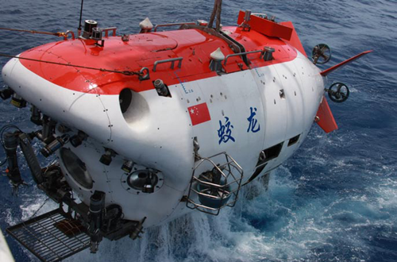
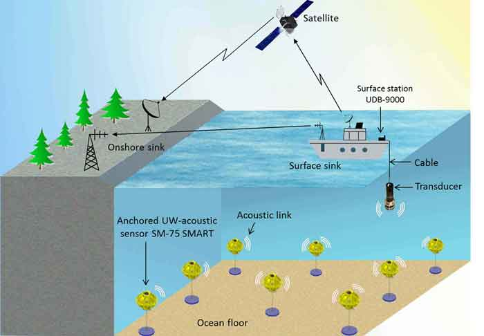
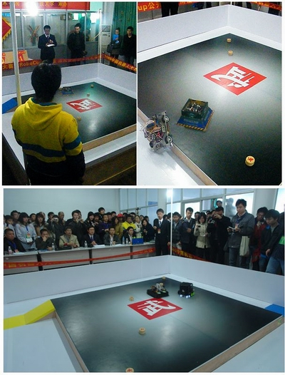

xuhao.cas.ioa@gmail.com
219 Dayou Hall, Institute of Acoustics, Chinese Academy of Sciences, Beijing
I am a third year Master student at University of Chinese Academy of Sciences(UCAS), advised by Prof. Min Zhu. I work with a number of chill and smart people in the NetSys lab.
Previously, I earned my bachelor degree in Telecommunication Engineering from Wuhan University of Technology (aka WUT) in 2011. My research interests are mainly about mobile computing, cyber security and detection techniques. I also love Mathematics, Algorithm and Programming.
An Algorithm of Multi-array Turbo Equalization of Underwater Acoustic Communication
Hao Xu, Min Zhu, Yanbo Wu,
The Journal of Electronic Information In Chinese,To Appear
The Union of Time Reversal and Turbo Equalization On Underwater Acoustic Communication
Hao Xu, Min Zhu, Yanbo Wu,
IEEE Ocean Coference 13, San Diego
Robot Design Challenge Competition
Huang Rui, Hao Xu, Hong Jiang
Sciencepaper Online
|  |
Underwater acoustic communication system for manned deep submersible JiaoLong. (The First manned subsmersible for China ) Underwater acoustic transmission of images, human voice, data and texts between vehicle under 7000m depth and surface ship was accomplished of this underwater acoustic communication system. This project is funded by the National 863 High-Tech Foundation, PI: Min Zhu. Research News: Sina News, ScienceNet News, Wikipedia, Youtube, CNTV News, and Global Times |
|  |
Underwater acoustic network, Signal processing in physical layer communication Electromagnetic waves can’t be used for data transmission in the ocean, so underwater wireless networks are generally formed by acoustically connected ocean-bottom sensors, autonomous underwater vehicles, and a surface station, which provides a link to control center. Shallow water acoustic channel characteristics, such as low available bandwidth, highly varying multipath, and large propagation delays, restrict the efficiency of UWA networks. My work is concentrated on Time reversal and Turbo equalization. This project is funded by the National 863 High-Tech Foundation, PI: Min Zhu. Research News: Stevens News, Mobile Healthcare Information and Management Systems Society News |
|  |
Robot for Robot Wars Competition. We design a powerful robot to participate in the famous Robocup Competition (just like the famous TV show: Robot Wars). This kind of robot needs to detect the own positions and the opponet on a fixed platform, then the robot push the opponent away from the platform for victory. To meet these needs, we used the circuits of the microcontroller and sensors, the efficient control algorithm to attact the opponent. Besides, our local computer would record the data from the robot in competition from the platform by the wireless RF module. This project won the first prize in national Robocup competition. |